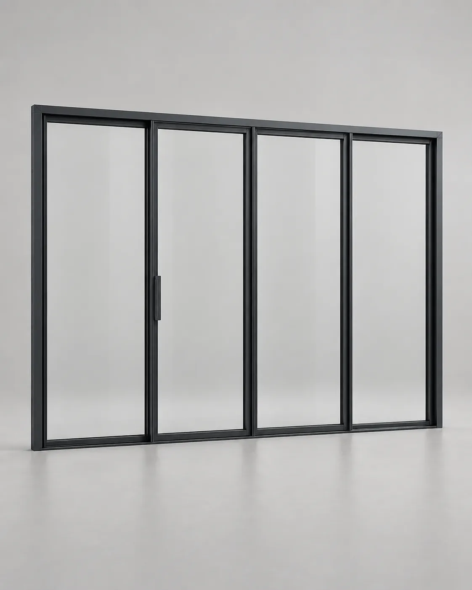
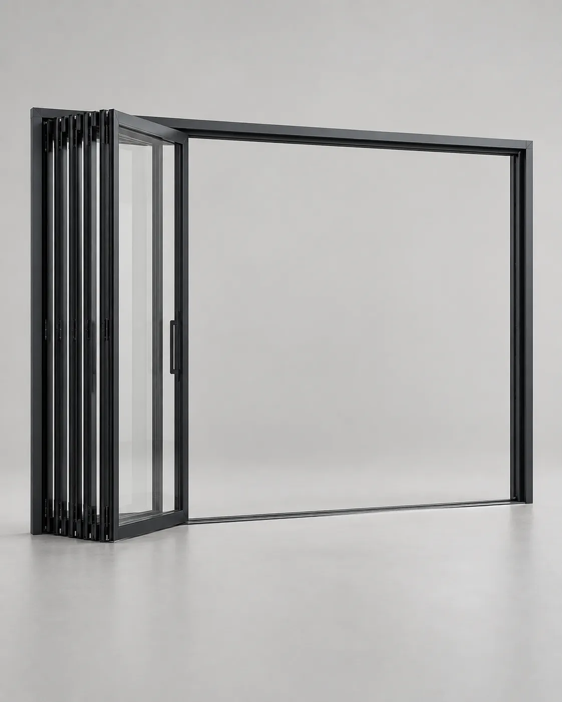

Конструкция
ALUMARK S70, стеклопакет и заводская сборка.



FS4 · ALUMARK S70
01 / Конфигурация
Canvas привязан к конкретному SKU.
02 / Характеристики
Полная спецификация подключается из единого источника данных после финальной технической проверки.
03 / Комплектация
ALUMARK S70, стеклопакет и заводская сборка.
Roto Patio Fold по спецификации SKU.
Доставка, монтаж и подготовка проёма.
04 / Документы
Проект